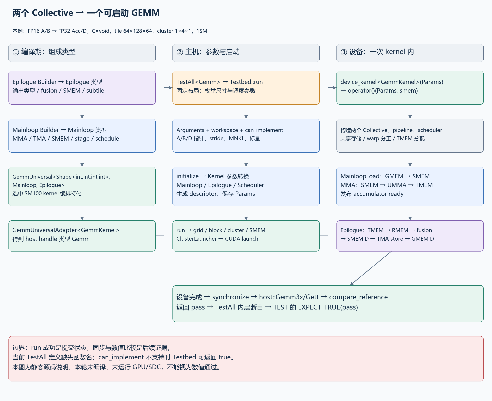
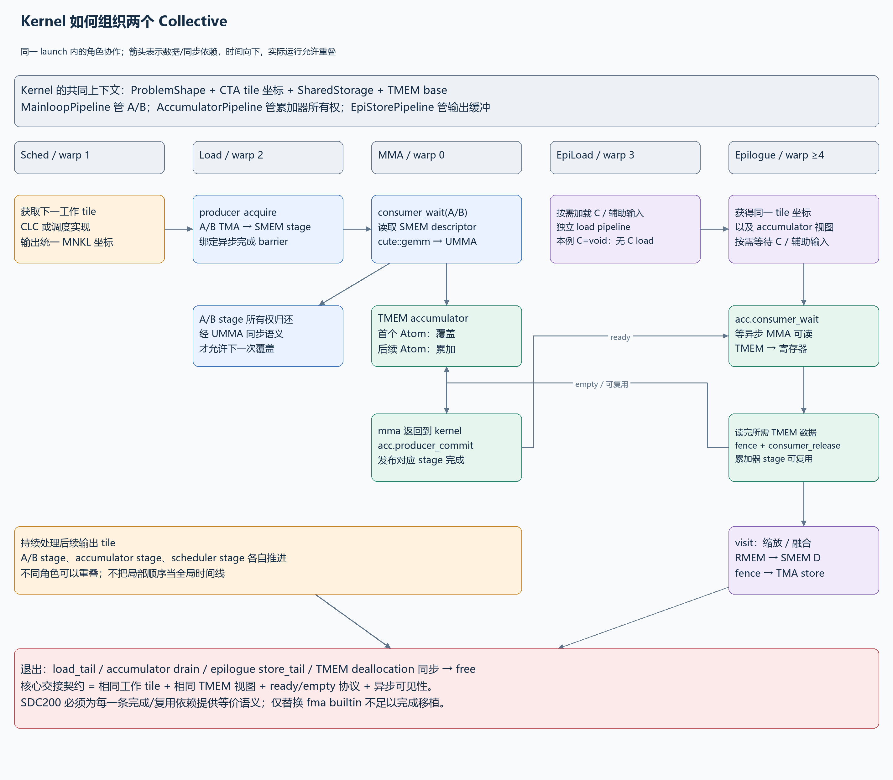
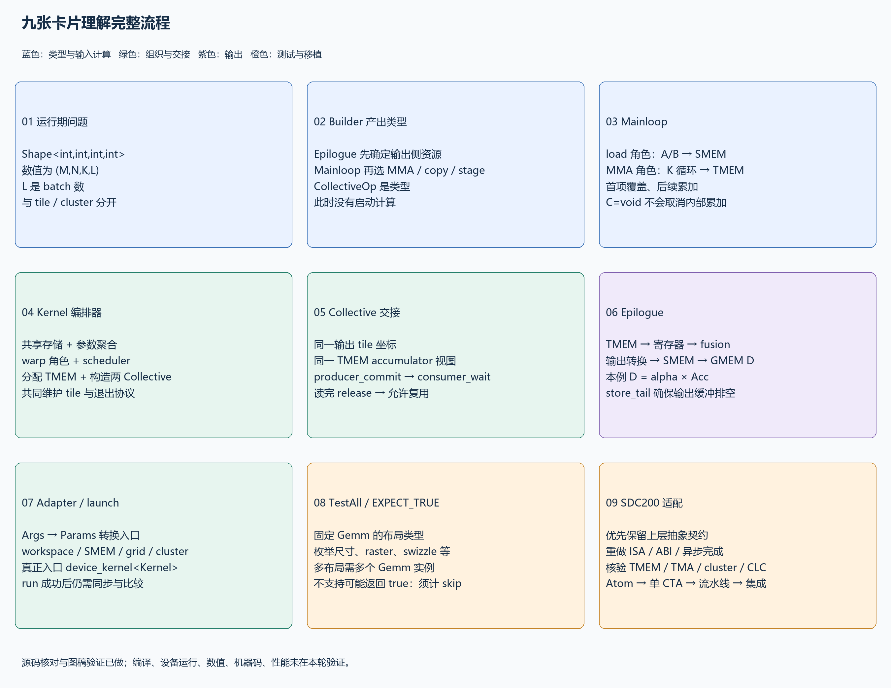
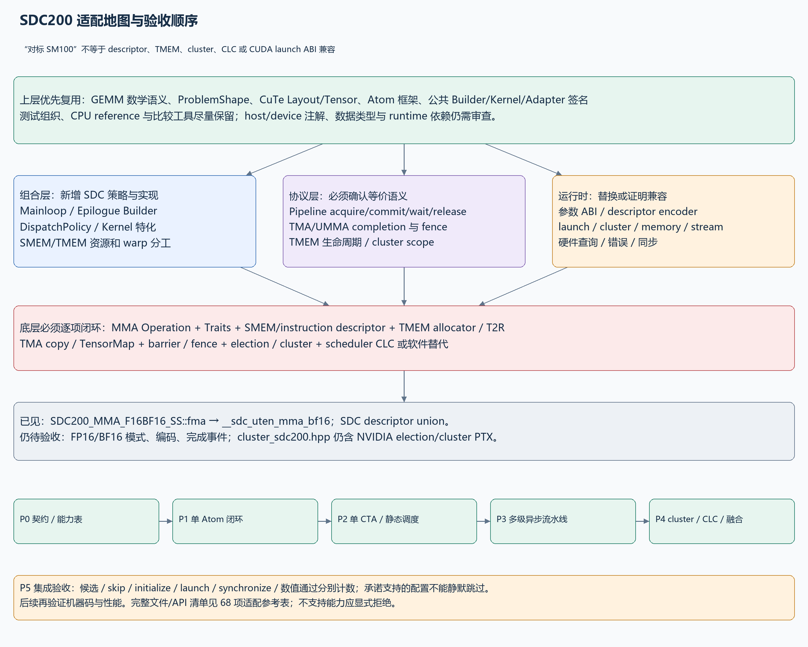

从两个 Collective 到可启动 GEMM：SM100 源码链与 SDC200 适配指南
本文对应本项目此前的 FP16 输入、FP32 累加/输出、ElementC=void、tile 64×128×64、cluster 1×4×1、1SM 测例。先解释这条具体路径，再区分可泛化的接口与 SM100 专用实现。完整逐项适配清单见 SDC200 适配参考表，可筛选版本见 CSV 表格。
0. 最重要的结论与证据边界
GemmUniversal<Shape<int,int,int,int>, Mainloop, Epilogue> 通过模板特化选中 kernel 编排器。编排器把两个 Collective 的类型、参数、共享存储、线程角色、调度器和同步协议组合起来。真正的 __global__ 入口是 device_kernel<GemmKernel>，入口内部构造 kernel functor 并调用其 operator()(Params, smem)。
两个 Collective 运行于同一次 kernel launch。Mainloop 内部又分搬运和 MMA 角色；Epilogue 内部又分可选 C/辅助输入搬运和输出处理角色。它们通过 相同的输出 tile 坐标、同一份 TMEM 累加器视图、AccumulatorPipeline 的生产/消费协议 衔接，整个过程不是一次 host 端 Mainloop(); Epilogue(); 的串行调用。
四个 int 是运行时 (M,N,K,L) 的类型，L 是批次数。主循环 tile、CTA cluster、Atom shape、epilogue subtile 均为另一层概念。
需要修正原问题的一点：单次 TestAll<Gemm>() 不枚举 A/B/C/D 的 RowMajor/ColumnMajor 类型组合。 这些布局已在 Gemm 的类型中固定。不同布局组合由其他 TEST/类型实例化覆盖；本次 TestAll 枚举问题规模、raster order、swizzle 和 splits 等候选参数。
本次证据来源
- SM100 源码：
D:/000_SDC/001TASK/02_Research/cutlass，HEAD f94ec46f4f63f96003d6cfdf2014731e7672c281。工作树存在既有修改，本文行号以本轮读取的工作树为准。
- SDC200 参考树：
D:/lvz/sdc/cutlass，HEAD dc45f979ae336a235da1676b311f35efeb30149a。仅抽查相关包装和描述符，未做全仓适配完成度审计。
- SDC builtin 声明：
D:/lvz/sdc/sccnext-main/sccnext-main/clang/lib/Headers/sdc/sdc_builtins.h。
- 当前
gemm_testbed_3x.hpp:3828 为 bool (...)，缺失 TestAll 名称。已对照同一 HEAD 提交内容确认原函数为 bool TestAll(...)。以下描述其函数体的预期语义，不表示当前工作树可直接编译，本次没有修复或改动源代码。
- 本机 PATH 未发现
nvcc、nvidia-smi。本次只完成源码核对、文档、图稿与文件检查，没有 CUDA/SDC 编译、GPU/模拟器运行、数值通过、机器码或性能验证。
- NVIDIA 官方资料也将 kernel 层定义为两个 Collective 的组合，再由 host adapter 包装；具体 SM100 实现和行号仍以本地版本为准：CUTLASS 3.x GEMM API、内核 API 与兼容性。
1. 先看完整调用链

PNG · 可编辑 Draw.io
编译期
CollectiveBuilder(epilogue) → CollectiveEpilogue
CollectiveBuilder(mainloop, epilogue SMEM carveout) → CollectiveMainloop
GemmUniversal<ProblemShape, Mainloop, Epilogue> → GemmKernel 类型
GemmUniversalAdapter<GemmKernel> → Gemm 类型
主机运行期，每个候选问题
TEST → TestAll<Gemm> → Testbed3x::run → TestbedImpl::run
→ sufficient / initialize inputs
→ Gemm::Arguments{mode, problem_shape, mainloop, epilogue, hw_info, scheduler}
→ get_workspace_size → allocate → can_implement
→ adapter.initialize
→ kernel.initialize_workspace
→ kernel.to_underlying_arguments
→ mainloop.to_underlying_arguments：A/B tensor + TMA descriptor
→ epilogue.to_underlying_arguments：fusion + C/D TMA descriptor
→ scheduler.to_underlying_arguments
→ 保存 Params，必要时设置 dynamic SMEM 属性
→ adapter.run → grid/block/cluster/SMEM
→ ClusterLauncher::launch_with_fallback_cluster（本例非 1×1×1）
→ cudaLaunchKernelExC
设备运行期，一次 kernel launch 内
device_kernel<GemmKernel>(Params) → GemmKernel::operator()(Params, smem)
→ 建立共享存储、Collective 对象、pipeline、scheduler、TMEM
→ scheduler 持续给出 tile
→ load warp：GMEM A/B → SMEM 多级缓冲
→ MMA warp：SMEM descriptor → UMMA → FP32 TMEM
→ accumulator pipeline：通知完成、等待消费、允许复用
→ epilogue warp：TMEM → registers → fusion → SMEM D → TMA store → GMEM D
→ tail/drain → 安全释放 TMEM → kernel 完成
主机验证
synchronize → host::Gemm3x/Gett reference → compare_reference
→ bool pass → 内层 EXPECT_TRUE → 外层 EXPECT_TRUE(pass)
run() 的成功通常说明 launch 阶段没有报告错误，不意味着异步设备计算已完成。Testbed 后续同步并比较结果，才覆盖设备运行和数值检查。
2. 编译期：为什么只写三个模板实参就能组成 kernel
2.1 Builder 产出的是类型
using Epilogue = typename EpilogueBuilder</*输出、融合、tile、架构*/>::CollectiveOp;
using Mainloop = typename MainloopBuilder<
/*输入、MMA、tile、cluster、stage、schedule*/>::CollectiveOp;
using GemmKernel = cutlass::gemm::kernel::GemmUniversal<
cute::Shape<int,int,int,int>, Mainloop, Epilogue>;
using Gemm = cutlass::gemm::device::GemmUniversalAdapter<GemmKernel>;
这些 using 不申请 GPU 内存，也不执行 GEMM。Builder 根据元素类型、布局、对齐、tile、cluster 和 schedule 选择 CollectiveMma/CollectiveEpilogue 的模板特化。通常先构建 Epilogue，是因为 Mainloop 的 StageCountAutoCarveout<sizeof(Epilogue::SharedStorage)> 需要预留输出侧存储，随后还要扣除 kernel 同步、调度等空间。
本例 epilogue Auto 选 1SM TMA 路径；Mainloop Auto 选 TMA + UMMA warp-specialized 路径。Mainloop builder 将 TiledMma、A/B 全局拷贝、SMEM layout、stage 数和 DispatchPolicy 打包成 CollectiveMma 类型。
2.2 GemmUniversal 不是把任意两个类粘在一起
声明在 include/cutlass/gemm/kernel/gemm_universal_decl.h，聚合头 gemm_universal.hpp include 多个架构实现。本例的实现是 sm100_gemm_tma_warpspecialized.hpp:61 起的偏特化，其使能条件检查 Mainloop::DispatchPolicy::Schedule 是否属于 KernelTmaWarpSpecializedSm100 或其 block-scaled 类别。
它从 Mainloop 提取 TileShape/TiledMma/ArchTag/StrideA/B/ElementAccumulator/ClusterShape/Arguments/Params，从 Epilogue 提取 EpilogueTile/ElementC/D/StrideC/D/Arguments/Params/ThreadCount。随后建立 scheduler 和多个 pipeline。接口必须在这些类型和同步约定上匹配；仅仅同名、继承了某个类或输出类型相同都不够。
省略的第四个模板参数默认 void。tile_scheduler.hpp:207 的 SM100 selector 把它映射到 PersistentTileSchedulerSm100<ClusterShape, SchedulerPipelineStageCount>。该实现包含硬件 CLC 工作获取，不能把它当作完全与架构无关的整数循环。
2.3 形状与地址，必须分四层
| 层 |
本例 |
谁决定 |
用途 |
| 完整问题 |
(M,N,K,L) |
运行时 Arguments.problem_shape |
整个 GEMM 和 batch 范围 |
| Mainloop tile |
64×128×64 |
编译期 Builder |
输出 tile 和 K 分块 |
| CTA cluster |
1×4×1 |
编译期配置，本例静态 |
4 个 CTA 沿 N 协同，完整覆盖 64×512 |
| MMA Atom |
64×128×16，对应本例 FP16 |
MMA Traits |
每个完整 K tile 有 4 个 K=16 子操作 |
| Epilogue subtile |
Auto 推导 |
epilogue Builder |
分片加载 TMEM、融合并存回 D |
CuTe 的 A 视图为 (M,K,L)，B 为 (N,K,L)；B 的坐标顺序不同于数学记法 B[K,N]，不代表物理执行转置。batch 是通过 stride 的第 3 分量访问同一问题的第 l 批。
3. Kernel 在结构上怎样容纳两个 Collective
3.1 两套参数嵌入一套 kernel 参数
本例实现 sm100_gemm_tma_warpspecialized.hpp:215 的 host 接口为：
struct Arguments {
GemmUniversalMode mode;
ProblemShape problem_shape;
MainloopArguments mainloop;
EpilogueArguments epilogue;
KernelHardwareInfo hw_info;
TileSchedulerArguments scheduler;
};
struct Params {
GemmUniversalMode mode;
ProblemShape problem_shape;
MainloopParams mainloop;
EpilogueParams epilogue;
TileSchedulerParams scheduler;
KernelHardwareInfo hw_info;
};
Arguments 面向调用者：A/B/C/D 指针、stride、alpha/beta 和调度选项。Params 面向设备：包含下层已经转换的 TMA/融合/调度描述。两者不是简单的同结构拷贝，也不是把整块矩阵复制进参数。
Kernel 的 to_underlying_arguments 是总调度者，分别调用两个 Collective 和 scheduler 的转换函数。Adapter 调用这个总转换并保存 params_；描述符的实际构建知识属于各个 Collective/CuTe 后端。
3.2 参数转换的具体数据流
Mainloop 的 Arguments 包括 ptr_A, dA, ptr_B, dB 及运行时数据类型字段。转换函数读取 (M,N,K,L)，构造 tensor_a(M,K,L,dA) 与 tensor_b(N,K,L,dB)，结合 SMEM layout、TiledMma 与 cluster layout 调用 make_tma_atom_A_sm100 和 make_tma_atom_B_sm100。该实现还构造 fallback 描述符字段；静态 cluster 的构造函数选择常规路径。
Epilogue 的转换函数建立 C/D 视图及 TMA 参数，并调用 FusionCallbacks::to_underlying_arguments。C=void 时实际 C 数据路径禁用，D 描述符仍然必要。alpha/beta 的数值与是否读取 C，受 fusion 配置及其参数共同控制。
注意三种“描述符”不同：
| 描述符 |
构建/使用位置 |
描述内容 |
移植注意 |
| TMA TensorMap |
host 参数转换 → device copy |
全局 tensor、尺寸、stride、tile、swizzle 等 |
NVIDIA 路径可调用 cuTensorMapEncodeTiled；SDC 需确认等价 ABI |
| UMMA SMEM descriptor |
device MMA fragment/Traits |
共享内存地址、步长和 swizzle 等 |
不是 A/B 的数据，也不是普通 64 位指针 |
| UMMA instruction descriptor |
Traits → fma |
输入/累加类型、M/N、major、取负等指令模式 |
不能默认与 SDC 位编码一致 |
3.3 共享存储不是中间矩阵
SharedStorage 在 kernel 文件 :182 处组合：
pipelines.mainloop：A/B 缓冲的空/满及异步事务同步。pipelines.epi_load：可选 C/辅助输入搬运同步。load_order、clc、clc_throttle：搬运顺序和工作分发。pipelines.accumulator：Mainloop 与 Epilogue 的 TMEM 所有权交接。tmem_dealloc：退出和释放 TMEM 的参与者同步。clc_response[]、tmem_base_ptr：调度响应和 TMEM 基地址。tensors.epilogue、tensors.mainloop：输出侧 SMEM 暂存和 A/B 多级 SMEM 缓冲。
该版本的 TensorStorage 包含并列成员，不能泛称为两个 Collective 的 SMEM 总是 union 复用。TMEM 累加器本体也不在上述 SMEM 数组中，SMEM 只保存其地址及同步元数据。
4. 设备端：两个 Collective 的详细协作

PNG · 可编辑 Draw.io
4.1 线程分工
本例 kernel 的 WarpCategory 为：warp 0=MMA，warp 1=Sched，warp 2=MainloopLoad，warp 3=EpilogueLoad，warp 4 及之后=Epilogue。线程数公式为 4×NumThreadsPerWarp + Epilogue::ThreadCount；图上角色表示源码分工，不把总线程数硬编码为所有配置都相同。
| 角色 |
主要工作 |
所属层 |
| Sched |
获取/广播下一工作 tile，维护 CLC pipeline |
Kernel + TileScheduler |
| MainloopLoad |
取 A/B tile，经 TMA 放入 SMEM stage |
CollectiveMainloop |
| MMA |
等待 A/B ready、发射 MMA、写 TMEM、发布 accumulator ready |
CollectiveMainloop + kernel 的交接代码 |
| EpilogueLoad |
按需搬 C/辅助输入 |
CollectiveEpilogue；本例默认 C=void，无需 C load |
| Epilogue |
等待累加完成、TMEM→寄存器、融合、存 D、释放 accumulator stage |
CollectiveEpilogue |
角色划分不代表所有代码每个线程都执行。warp/lane predicate 控制具体发射者；一个 warp 的角色也不等于硬件操作必须由 32 个 lane 各自发射一遍。
4.2 初始化：先建立共同“坐标系”和同步对象
- 读取 warp、lane、cluster rank，映射角色；将动态 SMEM 缓冲解释为
SharedStorage。
- 以各自
Params 构造 CollectiveMainloop 和 CollectiveEpilogue，它们引用同一次 launch 的参数/存储。
- 初始化 MainloopPipeline、EpiLoadPipeline、EpiStorePipeline、AccumulatorPipeline、CLC pipeline 和 barrier，并执行所需同步，使初始化结果对参与者可见。
load_init 根据 tensor 与 cluster 分区生成后续 TMA copy 使用的视图和 multicast mask。init_tmem_tensors 构造累加器 tensor 的布局；MMA 角色申请 TMEM，写入 tmem_base_ptr，通过分配结果 barrier 通知输出角色；双方 set_tmem_offsets 令自己的 tensor 视图指向同一物理 TMEM。- 每个角色从 scheduler 对应的工作流得到相同逻辑输出 tile，并分别维护本角色的 pipeline state。不是所有 warp 去抢同一个任务后自行猜测归属。
4.3 A/B 搬运协议：防止提前读取和提前覆盖
CollectiveMainloop::load，sm100_mma_warpspecialized.hpp:589：
producer_acquire(write_state) 等这个 stage 可写
producer_get_barrier(write_state) 获得异步事务完成对象
write_stage = write_state.index()
copy(TMA_A.with(barrier, maskA), A_tile, smemA[write_stage])
copy(TMA_B.with(barrier, maskB), B_tile, smemB[write_stage])
推进 K iterator / state
MMA 侧 consumer_wait(read_state) 等待 TMA 数据完成，再从相同 stage 的 SMEM descriptor 读取。完成对应异步 MMA 读取所要求的同步后，通过 consumer_release 路径允许生产者复用 SMEM。底层 SM100 pipeline 含 UMMA arrival/commit 语义，不能将 release 机械替换为一个普通计数器写。
本例 cluster 沿 N 有 4 个 CTA，它们需要同一 M/K 范围的 A、不同 N 范围的 B，Builder 因而可为 A 选择 multicast。multicast 是 cluster 搬运能力，不改变 1SM MMA 的协作粒度。
4.4 MMA 与 TMEM：两个 Collective 的真正交接点
CollectiveMainloop::mma，同文件 :652 起：
accumulator_pipeline.producer_acquire(acc_state)，等待有一个可写的 TMEM accumulator stage。- 对新输出 tile 设置
tiled_mma.accumulate_ = ScaleOut::Zero。
- 对每个 K tile 等
mainloop_pipeline.consumer_wait，选择 read_stage。
- 逐个 Atom K 子块执行
cute::gemm(tiled_mma, descA_fragment, descB_fragment, accumulators)；首次之后设置 ScaleOut::One，继续累计部分和。
- 释放对应 A/B stage，推进到下一个 K tile。
- 返回 kernel 后，kernel 在
sm100_gemm_tma_warpspecialized.hpp:770 调用 accumulator_pipeline.producer_commit(acc_state)，将异步 UMMA 完成纳入消费者可等待的协议，然后推进 accumulator state。
slice_accumulator(tmem_storage, acc_stage) 传递的是指定 stage 的 tensor 视图，并没有 host 拷贝或先写一份中间 GMEM 矩阵。Epilogue 取得同一地址/布局的 accumulator 视图。
实际 MMA 调用链：
CollectiveMainloop::mma
→ cute::gemm
→ MMA_Atom::call
→ MMA_Traits<SM100_MMA_F16BF16_SS>::mma_unpack（ADL hidden friend）
desc_a = A[0]; desc_b = B[0]
tmem_c = raw_pointer_cast(D.data())
idesc = make_runtime_instr_desc(traits.idesc_)
→ SM100_MMA_F16BF16_SS::fma
→ elect_one_sync 的发射 lane
→ tcgen05.mma.cta_group::1.kind::f16
ElementC=void 是禁用 epilogue 的全局源矩阵 C；scaleC/accumulate_ 则控制 MMA 是否保留旧 TMEM 部分和。它们含义不同，因此 C=void 仍有跨 K 的累加。
4.5 Epilogue 消费协议与输出
Kernel 在 :897 取得 accumulator 视图，调用 scheduler.fixup；本例默认 scheduler 不切分 K，不需要 split-K 归并。随后把 accumulator、对应 pipeline/state、完整 problem shape、tile 坐标和 epilogue SMEM 一并交给 CollectiveEpilogue::store。
Epilogue 在相关 subtile 上执行：
acc_pipeline.consumer_wait 等 UMMA 的结果可读
copy(tiled_t2r, tmem_accumulator, rAcc) TMEM → 寄存器
fence_view_async_tmem_load 需要释放时确保相关 TMEM 读取满足完成约束
acc_pipeline.consumer_release 该 stage 不再需要时，交还给 MMA
cst_callbacks.visit(...) alpha/beta/融合计算
NumericArrayConverter 转成输出 SMEM 元素类型
copy(tiled_r2s, rD, sD[stage]) 寄存器 → SMEM
fence_view_async_shared + synchronize 让 TMA 看见所有输出写入
copy(tma_store_d, sD, gD) SMEM → GMEM D
store pipeline commit/acquire/tail 等待、复用与排空输出缓冲
TMEM stage 的 release 可以发生在相关累加器数据已读取到寄存器之后，不必等待整个 D 都写完；具体时机由 subtile、do_acc_release 和 overlapping 配置决定。不能把 epilogue 的每个 subtile 都画成“释放整个 TMEM”。
默认计算为 D = alpha*Acc + beta*C；本例 C=void，等效 D = alpha*Acc。输出 FP32，默认 alpha=1，因而验证的是每批 FP16 A/B 形成的 FP32 GEMM 结果。
4.6 持续调度与退出
load、MMA、epilogue 可以处理不同流水阶段，持续推进多个输出 tile。Mainloop 的 A/B stage 数、TMEM accumulator stage 数、scheduler pipeline stage 数是不同的容量，不应统称一个 Stages。
退出时需要 load_tail、accumulator 的完成/消费同步、epilogue load/store tail、TMEM 分配许可释放和最终 free。TMEM 的释放必须满足全部参与者不再访问；单看 mma() 返回不能证明可立即 free。
5. Adapter 怎样把这个 C++ 类型启动到设备
GemmUniversalAdapter 是有状态的 host handle，3.x 特化在 gemm_universal_adapter.h:123。它保存 Params params_，提供稳定接口，但内部 launch 仍有 NVIDIA 架构与运行时依赖。
| 调用 |
实际负责的事 |
不应混淆 |
get_workspace_size(args) |
查询 kernel/epilogue/scheduler 的额外全局工作区 |
不是 SharedStorageSize，也不含调用者的全部 A/B/D 内存 |
can_implement(args) |
聚合 mode、Collective、scheduler、cluster 等约束 |
不执行 kernel，不保证后续申请/launch 成功 |
initialize(args, workspace, stream) |
初始化 workspace，调用 kernel 参数转换，保存 params_，必要时设置动态 SMEM 属性 |
3.x 这个实现不会自动替调用者执行一遍 can_implement |
update(args, workspace) |
重新转换/更新参数，检查所需 workspace |
不能概括为已重新完成所有 workspace 初始化/函数属性配置 |
run(stream) |
使用保存的 params_ 计算 launch 配置并提交 kernel |
是异步提交，尚未 host reference 比较 |
run(args, workspace, stream) / 对应 operator() |
先 initialize 再 run |
仍需要调用者提供正确生命周期的内存和参数 |
本例 ArchTag=Sm100、静态 cluster 大小为 4，所以普通 host launch 路径进入 ClusterLauncher::launch_with_fallback_cluster，内部用 cudaLaunchKernelExC。静态 1×1×1、动态 cluster、其他架构、启用 CudaHostAdapter 等配置会走不同分支，不能把这一条路径推广为所有 Gemm 的唯一 launch。
device_kernel.h:118 中的入口收到 Params，声明动态共享内存 smem[]，构造 Operator op，调用 op(params, smem)。所以严格来说 GemmUniversal 提供 kernel 的实现类型/编排，而可被 runtime launch 的函数实例是这个入口包装。
6. TestAll、Testbed、EXPECT_TRUE 的完整语义
6.1 一次 TestAll 的覆盖范围
布局来自已经固定的 Gemm；函数体读取其 alignment、TileK 和 Stages 来生成尺寸。本例：
| 测试轴 |
候选/行为 |
| M |
{8, 488} |
| N |
{8, 496} |
| K |
{8, 64*(S+1)-8}，S=GemmKernel::DispatchPolicy::Stages |
| L |
常规循环为 1；最后另测 (264,264,168,3) |
| raster order |
AlongM、AlongN，属于 tile 遍历次序，不是矩阵存储布局 |
| max swizzle size |
1、4，属于 scheduler tile 重排参数，不是 SMEM swizzle 位编码 |
| decomposition |
默认 heuristic；显式 StreamK scheduler 才增加其他模式 |
| splits |
内层依据 K tile 数生成多个候选；默认 persistent scheduler 的 args 只接收 raster/swizzle，不实际启用 split-K |
| alpha / beta / equality |
默认 1 / 0（C=void）/ RELATIVE |
举例：若编译结果 S=8，较大 K=568，K tile 数为 9。小 K 的 splits 列表为 {1,1,2}，保留重复项；大 K 为 {1,2,3,9,10}。候选 Testbed 调用数是 2*2*2*2*(3+5)+1 = 129。这是条件化的静态枚举推导，不能据此声称本轮真的启动了 129 次 kernel。因为 can_implement 跳过、异常或提前失败都会改变实际执行数，且 S 在本轮未重新编译求值。
6.2 每次 Testbed 做什么
sufficient() 查询设备和每 block 可用动态 SMEM，本版本不满足会返回 false。- HostCollectiveMainloop 初始化 A/B，HostCollectiveEpilogue 初始化 C/D 与标量/参考数据，并完成所需 host/device 数据传输。
- 构建 kernel
Arguments：mode=kGemm、problem size、mainloop args、epilogue args、hw_info、scheduler args。注意本测试 rank=4 的 batch 也使用此实现接受的 kGemm 路径，不能把所有 L>1 都机械解释成测试设置了 kBatched。
- 查询并申请 workspace；检查
can_implement；初始化 adapter；提交 run。
cudaDeviceSynchronize() 捕捉异步错误。verify() 调用 cutlass::reference::host::Gemm3x，底层 Gett 做主机参考计算，再比较 D。- 内部断言给出具体问题信息；失败返回 false，
TestAll 退出；最外层 EXPECT_TRUE(pass) 将返回结果登记到 GoogleTest。
6.3 通过标志的实际限制，移植时尤其重要
当前 gemm_testbed_3x.hpp:2991–2996 在 can_implement 不成功时打印“不支持”并返回 true。因此 TestAll 的 true 可能包含未执行候选。EXPECT_TRUE(pass) 断言的是函数返回值，不是“所有理论配置都完成了计算”。GoogleTest 还会保留其他内层断言失败，不能只看最终 bool。
当前 Testbed 在 initialize 错误时仅打印，随后仍调用 run，并覆盖 status。移植验证版建议明确区分初始化失败、launch 失败、设备失败、数值失败、能力跳过，而不是依赖这个宽松控制流。
SDC200 测试报告应至少记录：候选数、明确不支持数、initialize 成功数、launch 成功数、同步成功数、数值比较成功数，以及每个 (M,N,K,L,layout,scheduler)。强制验收的目标配置如果跳过，应判为未完成，不能算数值通过。本次只给出建议，没有修改测试框架。
7. 卡片：每层该记住什么

PNG · 可编辑 Draw.io
| 卡片 |
一句话 |
最容易混淆的边界 |
| ProblemShape |
int×4 表示运行期 M/N/K/L |
不决定 tile、warp 或 cluster |
| Builders |
选择并生成两个 Collective 类型 |
CollectiveOp 是类型，不是一次运算结果 |
| Mainloop |
搬 A/B 并跨 K 累加到 TMEM |
一份 Mainloop 内部已经有 load/MMA 两个角色 |
| Kernel |
组织角色、存储、同步和任务坐标 |
不只是两个函数调用的顺序 |
| Handoff |
accumulator view + pipeline 交接 |
ready 信号必须对应异步完成与可见性 |
| Epilogue |
读累加器、融合、转换并存 D |
C=void 不影响 MMA 内部累加 |
| Adapter |
host 参数转换入口与 launch handle |
launch 成功不等于数值通过 |
| TestAll |
对固定 Gemm 枚举尺寸/调度 |
多布局需要多个类型/测试实例 |
| SDC200 |
保留抽象契约，重建硬件语义 |
替换 MMA builtin 只覆盖链条中的一环 |
8. SDC200：适配边界与现有代码的真实状态

PNG · 可编辑 Draw.io
“对标 SM100”是能力目标，不自动说明 SDC200 与 NVIDIA 的 ABI、warp、cluster、TMEM、descriptor、CLC、异步内存模型和 CUDA runtime 相同。建议保留 GemmUniversal/CollectiveBuilder/GemmUniversalAdapter 的用户接口形状，新增 SDC 架构策略和后端，按已验证能力启用配置。
8.1 当前能确认的 SDC 参考实现
现有 D:/lvz/sdc/cutlass/include/cute/arch/mma_sdc200_umma.hpp:72 定义 SDC200_MMA_F16BF16_SS，fma 在 :108 接受两个 64 位 descriptor、32 位 TMEM 地址、scaleC 和组合 instruction descriptor；在 :117 调用：
__sdc_uten_mma_bf16(tmem_c, desc_a, desc_b,
uint32_t(idescE >> 32), scaleC);
实际 compiler header sdc_builtins.h:897 声明：
void __sdc_uten_mma_bf16(uint32_t dTmem, uint64_t aDesc,
uint64_t bDesc, uint32_t iDesc,
uint32_t inputD);
这证明包装层和 builtin 形参形式已有对应；不证明 FP16 模式、descriptor 字段、K 粒度、完成事件或数值已正确。builtin 名含 bf16，包装类型支持 F16/BF16，实际类型选择是否由 iDesc 控制，需要以 SDC 编译器/ISA 契约和 FP16/BF16 两套运行测试确认。
mma_sdc200_desc.hpp:109 具有 SmemDescriptor union，属于 ABI 敏感数据结构。不能因为字段名/位宽和 SM100 相似就将它作为兼容结论；需要 golden bit-pattern、合法/非法布局与硬件读取验证。
cluster_sdc200.hpp:180 的 elect_one_sync 仍含 elect.sync；该文件还有 barrier.cluster、mapa.shared::cluster 和 NVIDIA 宏条件。可能依赖编译器兼容支持，也可能尚未替换，当前不能认定已原生适配。include 应放在全局命名空间，并通过后端选择避免同一翻译单元重复定义 cute::elect_one_sync 或出现 cute::cute。
8.2 两条适配路径与边界
| 能力条件 |
可以保留什么 |
必须改变什么 |
| SDC 有等价异步 TMA、可寻址 TMEM、完成 barrier、cluster 语义 |
可考虑保留类似 Mainloop/Epilogue 的协议和 kernel 分工 |
每个 descriptor、builtin、completion、runtime launch 和资源常量仍需验证/替换 |
| 有 MMA/TMEM，但无 CLC |
可保留 GEMM 数据链和部分流水线 |
使用静态 tile 调度或软件队列；scheduler 实现、selector 与 kernel 调度角色需适配 |
| 无 cluster 或 multicast |
单 CTA GEMM 抽象仍可保留 |
先用 cluster=1；A/B 独立搬运；删除/重做 cluster 同步与发射约束 |
| 无等价 TMA |
Tensor/布局与分块思想可保留 |
用协作 load 或其他 DMA，重做 Mainloop load、同步和输出 store 路径 |
| MMA 结果在寄存器、无等价 TMEM |
GEMM 上层类型接口与计算语义可保留 |
重建 accumulator fragment/Traits、Kernel handoff、Epilogue T2R，不能照搬 TMEM kernel |
| CUDA runtime/launch ABI 不兼容 |
Adapter 用户方法命名可保留 |
runtime shim 或新 launcher、设备属性/分配/拷贝/同步/错误、host descriptor encoder |
CudaHostAdapter 可作为 host launch 扩展点之一，但不能修复 device 内联 PTX、descriptor ABI 或同步语义。现 Adapter 使用 kMinComputeCapability >= 90、==100/101/103/120 等分支；即便给新架构设置“200”也不等于自动走正确 launch。应该用明确后端/能力选择替代借用 NVIDIA 编号来蒙混分发。
8.3 完整参考表与阅读顺序
打开完整适配表。表格覆盖：构建与宏、架构标签、类型/布局、Builder、dispatch、两个 Collective、kernel、scheduler、pipeline、barrier、TMA host/device、UMMA Traits/descriptor/Operation、TMEM、epilogue fusion、adapter/runtime、测试/reference、诊断和扩展范围。每行列出实际文件/API、可复用部分、需要适配部分、候选 SDC 落点及验收标准。
表中“建议新增”是设计建议，不是声称文件已经存在；“条件复用”是接口/算法在满足契约后可复用，不表示整个文件可以原封不动照搬。完整性针对本例 dense FP16/FP32 1SM 链以及扩展接入边界，不代表未经硬件规格就能列尽整个 CUTLASS 仓库的所有架构功能。
8.4 建议的落地顺序与验收门槛
- P0：固化契约。 确认 lane/warp、MMA 形状、TMEM 地址/容量、三类 descriptor、异步完成、barrier scope、cluster 和 runtime；为每项标记已支持/可兼容/需模拟/不支持。
- P1：底层闭环。 descriptor 编码 → 单次 MMA → TMEM 读回 → 与主机参考比较；覆盖 overwrite/accumulate、FP16/BF16、合法 tile 与拒绝条件。先证明一个 Atom，不直接跳入复杂 persistent kernel。
- P2：单 CTA。 固定支持的 tile，cluster=1，静态调度，最简单搬运和无融合 epilogue，跑多 K tile、尾块和 batch。该阶段改变了调度/搬运策略，不能将通过结果视为原 SM100 路径全兼容。
- P3：异步流水线。 增加多级 load/MMA/accumulator/store；用大 K、多 tile、重复运行压力验证 stage 所有权、phase wrap、尾部 drain 与可见性。
- P4：高级功能。 依次启用 TMA、multicast/cluster、CLC 或软件替代、融合、Stream-K/2SM 等。每项独立列覆盖矩阵，能力不支持要明确拒绝。
- P5：集成验收。 修复测试入口问题后接入 SDC unit target，强制记录实际执行与 skip；数值通过后再查机器码和性能。优化前记录 baseline，不能用编译成功替代正确性或吞吐达标。
9. 关键源码导航
下列行号来自本次工作树，后续修改会漂移；完整快照与 SHA-256 见 source-evidence.json，关键片段见 source-excerpts.txt。
| 目的 |
文件 |
位置 |
| 本例 Builder/Kernel/Adapter/TestAll |
test/unit/gemm/device/sm100_tensorop_gemm/f16_f16_void_f32.cu |
197、215、234、244、253 |
| GemmUniversal 声明/聚合入口 |
include/cutlass/gemm/kernel/gemm_universal_decl.h；gemm_universal.hpp |
模板声明；SM100 include |
| 偏特化与类型拼装 |
include/cutlass/gemm/kernel/sm100_gemm_tma_warpspecialized.hpp |
61–179 |
| shared storage / args / params |
同上 |
182、215、225 |
| 参数转换/检查/workspace/grid |
同上 |
257、301、339、384 |
| warp 角色与对象建立 |
同上 |
234、405、435 |
| TMEM、MMA、发布完成 |
同上 |
727、762、770 |
| Epilogue 调用 |
同上 |
897、911 |
| Adapter initialize/run |
include/cutlass/gemm/device/gemm_universal_adapter.h |
313、375、509 |
| 真正 global 入口 |
include/cutlass/device_kernel.h |
118 |
| 扩展 launch |
include/cutlass/cluster_launch.hpp |
294 |
| Mainloop host 转换/load/mma |
include/cutlass/gemm/collective/sm100_mma_warpspecialized.hpp |
355、589、652 |
| MMA Traits→fma |
include/cute/atom/mma_traits_sm100.hpp |
284、323 |
| MMA 指令落点 |
include/cute/arch/mma_sm100_umma.hpp |
86、111 |
| Epilogue T2R/fusion/store |
include/cutlass/epilogue/collective/sm100_epilogue_tma_warpspecialized.hpp |
574、866、882、895、922、771 |
| Testbed 执行与 skip 语义 |
test/unit/gemm/device/gemm_testbed_3x.hpp |
2877、2991、3014、3023、3032、3047 |
| TestAll 当前损坏与枚举 |
同上 |
3828、3840、3853、3878、3966 |
| CPU 参考 |
tools/util/include/cutlass/util/reference/host/gett.hpp |
491、837 |
10. 交付与验证
- 本文、独立适配表、UTF-8 CSV 表、4 组 PNG/Draw.io、离线阅读页均保存在当前项目
deliverables/gemm-universal-sdc200/。
- 所有 PNG 和
.drawio 来自同一节点/连线/文本/坐标数据；Draw.io 中节点、箭头和文字可单独编辑，没有用整张位图替代结构。字体字形、抗锯齿和箭头尖端在不同渲染器中可能略有区别。
- 检查范围：文件存在、源链接与锚点、UTF-8、Draw.io XML、节点/连线、PNG 尺寸、主要布局和文字视觉检查；详细结果见
validation.json。
- 本轮没有改动 CUTLASS/SDC 源文件，也没有进行编译或设备数值测试。
- 本轮问答完整记录保存在
qa-history/2026-10-20/。本地持久保存已完成；未配置并验证跨电脑同步渠道，本轮跨电脑同步未完成。